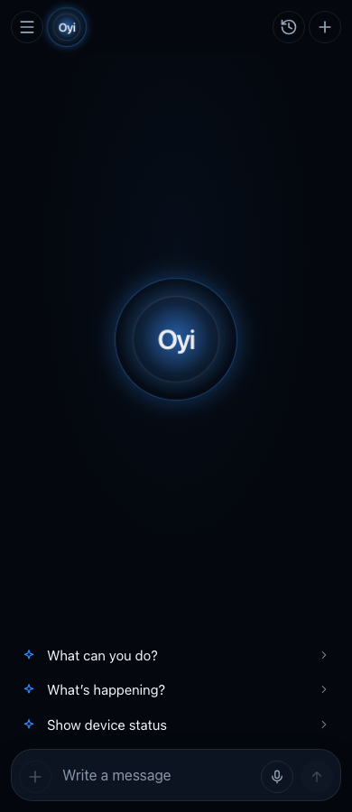
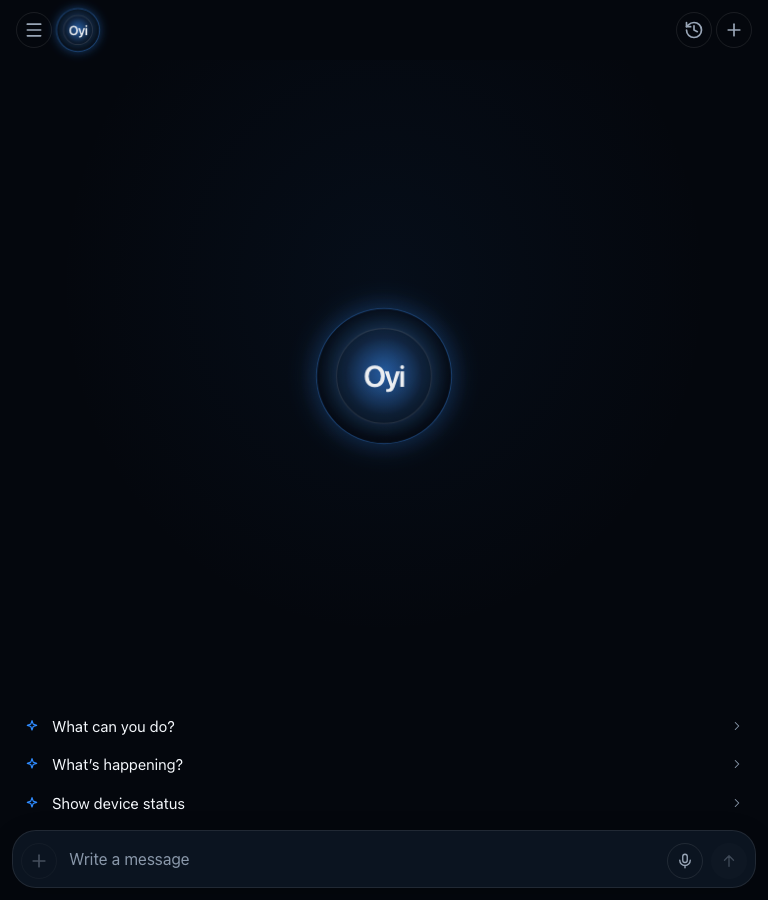
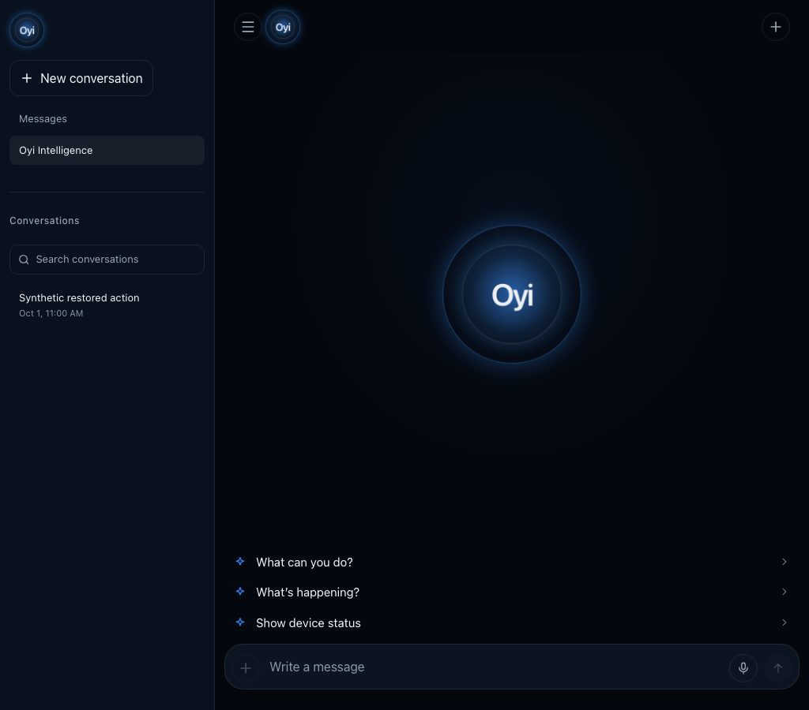
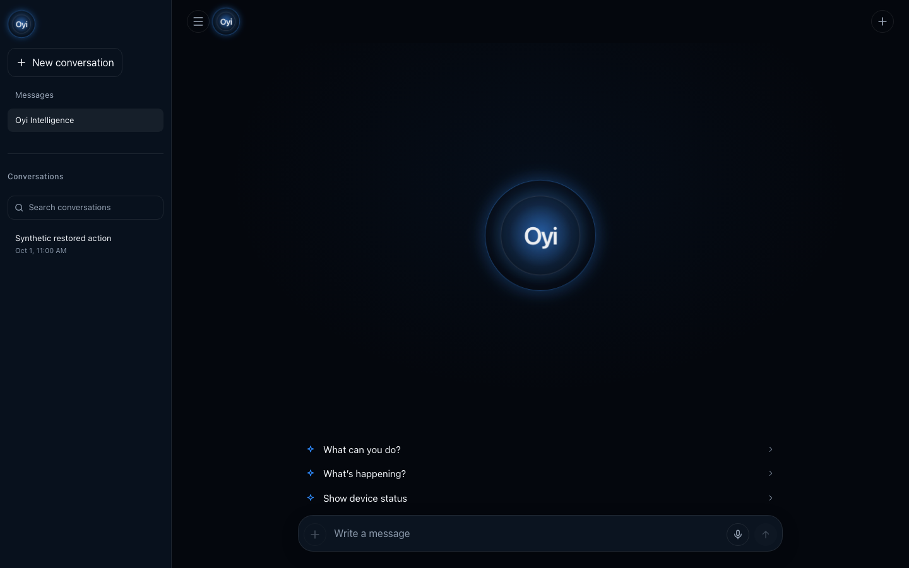

Actual locally built Consumer app, with synthetic intercepted API fixtures. No authenticated production behavior claimed. The 44px identity uses the same Orb layers/gradients as the unchanged central Orb, with optical 13px internal lettering and compact glow. Reduced-motion screenshots.



